Postdoc
Max-Planck Institute for Informatics
Dan Casas is a postdoc in the Graphics, Vision and Video group at the Max Planck Institute in Saarbrucken, Germany, supervised by Prof. Christian Theobalt. He previously was postdoc at the Character Animation group of the University of Southern California’s Institute for Creative Technology, in Los Angeles, USA. Dan received his PhD in Computer Graphics in 2014 from the University of Surrey (UK), supervised by Prof. Adrian Hilton. Dan's dissertation introduced novel methods for character animation from multi-camera capture that allow the synthesis of video-realistic interactive 3D characters. During his PhD, he was also intern at the R&D department of the Oscar Award-winning visual effects company, Framestore. Previously, in 2009, Dan received his M.Sc. degree from the Universitat Autonoma de Barcelona (Spain). In 2008, during the last year of his M.Sc. studies, he joined the Human Sensing Lab at Carnegie Mellon University (PA, USA) as an invited research scholar, where he investigated methods for real-time face tracking, advised by Prof. Fernando de la Torre.
My research interests include Computer Vision, Computer Graphics and Animation, mainly releated with human motion reconstruction and synthesis. I am particularly interested in reusing video data from multi-camera capture to synthesize novel video-realistic sequences.
| 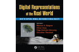 |
Video-Based Character Animation Dan Casas, Peng Huang and Adrian Hilton in Marcus Magnor, Oliver Grau, Olga Sorkine-Hornung and Christian Theobalt (Eds.): Digital Representations of the Real World: How to Capture, Model, and Render Visual Reality ISBN 9781482243819, pp. 239–252, CRC Press, 2015. pdf bib CRC Press |
| 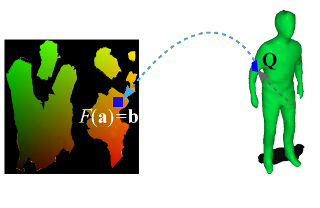 |
4D Model Flow: Precomputed Appearance Alignment for Real-time 4D Video Interpolation Dan Casas, Christian Richardt, John Collomosse, Christian Theobalt and Adrian Hilton Computer Graphics Forum (Proc. of Pacific Graphics), 2015 pdf bib video project DOI |
| 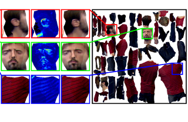 |
Optimal Representation of Multiple-View Video Marco Volino, Dan Casas, John Collomosse and Adrian Hilton British Machine Vision Conference (BMVC), 2014 (Oral) pdf bib video project DOI |
| 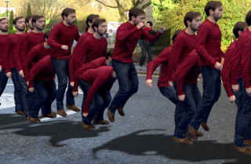 |
4D Video Textures for Interactive Character Appearance Dan Casas, Marco Volino, John Collomosse and Adrian Hilton. Computer Graphics Forum (Proc. of Eurographics), 2014 pdf bib video project data DOI |
| 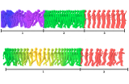 |
Animation Control of Surface Motion Capture Margara Tejera, Dan Casas, and Adrian Hilton. IEEE Transactions on Cybernetics, 2013 pdf bib DOI |
| 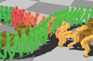 |
Interactive Animation of 4D Performance Capture Dan Casas, Margara Tejera, Jean-Yves Guillemaut and Adrian Hilton. IEEE Transactions on Visualization and Computer Graphics (TVCG), 2013 pdf bib project DOI |
| 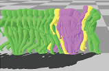 |
4D Parametric Motion Graphs for Interactive Animation Dan Casas, Margara Tejera, Jean-Yves Guillemaut and Adrian Hilton. ACM/SIGGRAPH Symp. on Interactive 3D Graphics and Games (I3D), 2012 Honorable Mention for the Best Paper Award pdf bib video project DOI |
| 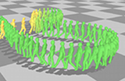 |
Parametric Control of Captured Mesh Sequences for Real-Time Animation Dan Casas, Margara Tejera, Jean-Yves Guillemaut and Adrian Hilton. ACM Motion in Games, 2011 Springer Lecture Notes in Computer Science 7060, 242–253, 2011. web pdf video |
| 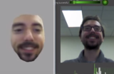 |
Blendshapes from Commodity RGB-D Sensors Dan Casas, Oleg Alexander, Andrew W. Feng, Graham Fyffe, Ryosuke Ichikari, Paul Debevec, Rhuizhe Wang, Evan Suma, Ari Shapiro. SIGGRAPH 2015 Talks |
| 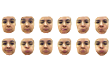 |
Rapid Photorealistic Blendshapes from Commodity RGB-D Sensors Dan Casas, Oleg Alexander, Andrew W. Feng, Graham Fyffe, Ryosuke Ichikari, Paul Debevec, Rhuizhe Wang, Evan Suma, Ari Shapiro. ACM/SIGGRAPH Symp. on Interactive 3D Graphics and Games (I3D), 2015. Best Demo Award pdf award ACM |
| 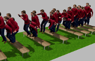 |
Dan Casas Interactive Video-Realistic Character Animation from 4D Performance Capture November 2013 Advisor: Prof. Adrian Hilton. University of Surrey pdf video |
| 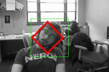 |
Dan Casas Real-Time Face Tracking Methods June 2009 Advisor: Dr. Fernando de la Torre. Universitat Autònoma de Barcelona - Carnegie Mellon University pdf video |
Graphics, Vision and Video Group
Max-Planck-Institut für Informatik
Department 4: Computer Graphics
Campus E1 4, Room 221
66123 Saarbrücken
Germany